Colonoscopy
Principles
& Fundamentals
Colonoscopic Anatomy
Handling the Scope
Performing the Colonoscopy
Frequently Asked Questions
Principles & Fundamentals
Golden rules
1. Do not advance without vision.
2. If in doubt, withdraw.
Key Principles
Subtlety and rotation are better than pushing.
- bends are numerous, unpredictable and frequently mobile, unlike in
the upper GI tract.
The colon is elastic:
- inflated it is long and tortuous.
- deflated it is significantly shorter and straighter
Fundamentals of technique
1. Inflate as little as possible, and aspirate at every opportunity.
2. Be gentle and avoid looping: using force as little as possible.
3. Pull back and shorten the colon at every opportunity.
- intermittent withdrawal is instinctively unnatural, but get used to
it.
4. Look at distance of insertion, and try to keep it appropriate to
location anatomically.
- viz 50cm at splenic flexure, which is half-way.
5. Pay attention: pt discomfort indicates looping or insufflation
excess.
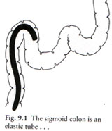
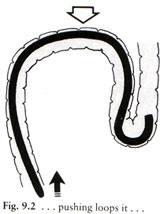
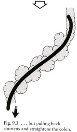
Ideal form:
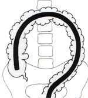
NB: If the scope is at the caecum at 70-cm other predictions are
possible; otherwise they are meaningless
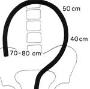
"It is sometimes difficult to
convince the enthusiasts of rigid sigmoidoscopy that their instrument
may be in the rectum at 25cm, whereas the flexible scope may be at the
proximal sigmoid".
Colonoscopic Anatomy
Endoscopic Anatomy
The fixed haustrations are the landmarks of interest.
At the descending, usually circular.
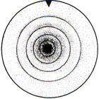
Cf 'toblerone' shaped at the transverse colon.
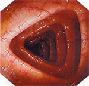
At certain places (us. hepatic flexure) haustra seen face on as thin
folds.
- and sometimes in the transverse if there is a deep transverse loop.
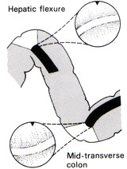
Viscera can be seen at hepatic flexure (bluish indent of liver) +/-
splenic flexure.
In the proximal colon, the tinae may be seen as faint bands that angle
in to appendix.
The appendix orifice is an unimpressive slit, often crescentric.
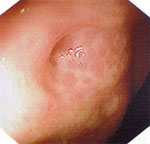
- be careful not to biopsy an inverted appendicectomy stump(!)
The ileo-caecal valve is medial on the ileo-caecal fold, encircling 5cm
from caecal pole.
- it is the only reliable landmark
- unfortunately the valve is often hidden; often all you'll see is the
slight bulge of the upper lip.
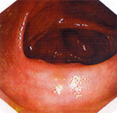
Normal mesenteric anatomy
Problems generally arise in mobile areas of colon or their attachments.
- the longer the sigmoid/transverse, the longer the mesentery.
Stretching mesentery hurts
- thus it is rare to get pain in those with long redundant sigmoid and
a floppy mesentery
The pelvis initially sends the scope up anteriorly, then loops it in
the sigmoid
- can often feel the AP clockwise loop on the anterior abdo.
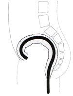
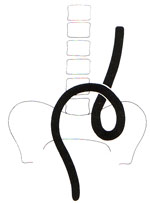
This is why a well placed hand pushing down will restrict looping:
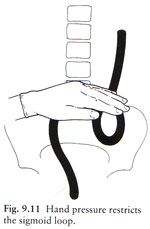
The rectosigmoid junction is an acute bend
-
acuteness depends partly on anatomy (eg a long sigmoid and a
low-fixation of descending).
- but partly also on technique: bowing of the sigmoid accentuates the
bend.
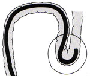
The laxity of the phrenicocolic ligament alters the ease of traversing
the transverse (fixed better).
- as does the depth of the transverse colon
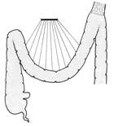
The angle at which the scope approaches the hepatic flexure is affected
by anatomical variance in the same way as the recto-sigmoid jx is above.
- the bend is similar, but usually more voluminous and fixation more
constant, making passage easier.
Handling the Scope
The scope
The shaft should run in an easy curve to the anus.
Each loop formed makes the internal mechanics of the scope tighter so
tip movements become harder and less precise.
Turning the control body one way or another can minimise stresses on
the shaft.
It should be easy to twist the shaft clockwise with the right hand, as
this is the frequent action.
The left hand should control all the dials most of the time.
Hold the shaft delicately between thumb and fingers.
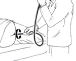
Twisting and torquing
1. Twisting with the
right hand can help re-orient view for biopsy, injection or aspiration.
- or help approach a bend from the right angle.
2. Twisting with the shaft straight but tip angulated deviates the tip
rapidly
- useful for a fixed colon, or when tip already angulated in a sharp
bend.
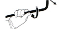
3. Remember that twisting with a loop in the shaft alters the loop
itself (see below)
- because the sigmoid is a spiral, a clockwise twist is particularly
effective here.
- this can also help shorten / concertina the mobile sigmoid.
- if you twist yourself in a tangle, can always undo it at the plug-in
to the machine
4. Torque is the
continual twisting of the shaft while inserting or withdrawing.
Insufflation
As in all colonoscopy, undertake as
much as necessary, as little as possible.
If the pt is becoming uncomfortable or the colon is fully distended,
stop.
- suction out all excess air until outline wrinkles and collapses.
A perfect luminal view is not necessary for progress.
- full inspection is for the return journey
- 'notice on the way in, inspect on the way out'
Suctioning
Suction fluid on the way back for the perfect view.
- evaculate the rectum on the way in though to avoid unpleasantness.
Don't plunge into every pool and suction on the way in, unless you want
to waste some time.
If the view becomes lost:
Either keep the controls still or let go, and withdraw gentle.
- the mucosa and vascular pattern will slide back past the lens.
- stop withdrawing and follow
the vascular pattern that is sliding past your eyes
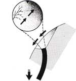
- likewise rotation of the vascular pattern predicts rotation of the
colon requiring a steering change.
The expert steers on evidence that is inadequate for the beginner
- mucosal folds, subtle variations in light for example.
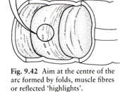
Localisation of the scope
Prediction is difficult, and notoriously inaccurate.
Transillumination can be helpful and light in the RIF is suggestive.
Balloting with fingers can be effective in the thin.
Fluid levels are a forgotten aid:
- fluid collects in the dependent colon.
- ie the descending colon in the left lateral position, and a little in
the ascending.
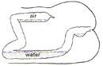
Performing the Colonoscopy
Insertion
Use liberal lubrication
Do a PR first
- prelubricates and avoids harm from a blind insertion.
On entering the rectum, a little 'red-out' is usual.
- insufflate and pull back or rotate slightly to find the lumen.
Rectosigmoid: Navigating bends
Quick and accurate with the left hand on the dials.
- try to predict the correct combination of angling and rotation that
you might require as you go.
- avoid scanning around, it is fast but not thought-out and difficult
to reverse to regain view.
If the view is poor despite correct direction, gently pull back the angled
tip.
- reduces the angle, shortens the bowel, straightens it distally and
disimpacts the tip:
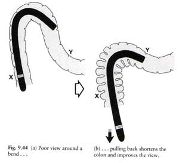
- if still difficult, pull back further and start again.
Pushing through a poor luminal view is a last resort.
- do not push it more
than a few cms or if pt in pain.
- should get a slide-by view of mucosa, stop if it blanches indicating
pressure.
- forceful insertion inevitably loops; so afterwards pull back to
shorten it until resistance or tip begins sliding back.
The Sigmoid-Descending Jx
Shows usually as an acute bend at ~40-70cm.
- perhaps the greatest challenge.
- blow lots of air in and cruise through the sigmoid, and you will
probably make an N-loop, making life difficult at the Jx:
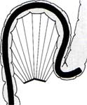
- if this happens, you need to pull back and deflate
- changing pt to right lateral position also opens the angle somewhat
if really stuck.
If getting the tip flexed inside the loop is difficult,
pre-steering before pushing in may help.
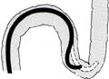
Once hooked in, reduce the loop by pulling back; now that the
retroperitoneal tip is relatively fixed.
- this will inevitably kink your view into the mucosa:
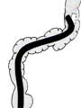
- now carefully straighten (a wrong move will cause you to fall
backwards into sigmoid)
- and advance with a twist (usually clockwise) and minimal insufflation
to delicately steer up descending without re-looping.
This 'clockwise-withdrawl manoeuvre' is also very useful one at this
point and elsewhere:
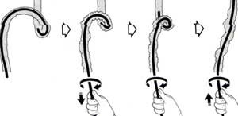
With good technique from the start, pulling back & straightening in
the sigmoid, and using less air, may ideally lead to an easy path:
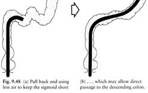
Note on the N-Loop
The commonist source of difficulty encountered later in the procedure
is N-looping in the sigmoid.
- most can be straightened, and it is worth doing this during sigmoid
passage.
- it is worth trying one or two withdrawls in the sigmoid to prevent
looping, where there is a bend to get some purchase on
- but often this only becomes possible at the sigmoid-descending
as above
- force is a last resort, used with care.
With a longer colon, complete removal may be difficult until tip has
reached around the splenic flexure to allow adequate purchase for
forceful withdrawl.
Manual pressure in the LLQ will contribute by reducing the size of the
loop
- transmits inward push on shaft laterally towards the sigmoid.
- if the assistant can feel the loop, reduce it back toward the pelvis
(push down and in).
Note on the sigmoid alpha-loop
Formation of an 'alpha-loop' (iatrogenic volvulus) is a blessing: there
is no sigmoid-descending angle.
Suspected when there is no acute jx, and the instrument slides a long
way without any problems at all.
- best now to wait to withdraw until into descending or across splenic
flexure else may revert to difficult N-loop.
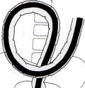
Making an alpha-loop: the 'alpha
manoeuvre'.
- some advocate trying to make one.
- iatrogenic volvulus by twisting the shaft counter-clockwise as much as
possible from the distal sigmoid on.
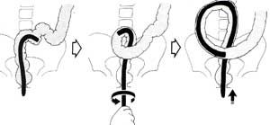
A short or fixed sigmoid mesentery will prevent formation of the
alpha-loop.
Unwinding the alpha-loop
When near / at splenic flexure, combination of withdrawal and clockwise
de-rotation.
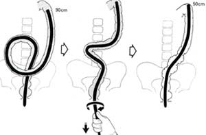
- de-rotation alone will revert the alpha into a big N-loop, so do both.
- a tendency to slip back can be stopped by applying more twist and
less-pull.
- this should not cause any discomfort, else reconsider... perhaps
there is a 'reversed-alpha' loop and you're twisting the wrong way.
Descending Colon
Should be traversed in a few seconds as a 20cm long straight.
No particular skills here other than frequent clockwise twist and
persistent hand pressure to minimise sigmoid colon looping.
If there is a lot of fluid here restricting the view, can be quicker to
turn the pt on the right side to fill it with air instead, rather than
wasting time suctioning.
Splenic Flexure
Pulling back with the tip hooked around the flexure until the
instrument is 50cm from the anus both straightens any sigmoid loop and
pulls down / rounds off the flexure.
- splenic tears have been reported, so be gentle here.
The tip may angle into and get trapped in the haustral folds:
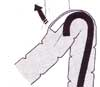
- to avoid this de-angulate and run the tip around the outside of the angle
- the view will be worse, but there won't be any impaction.
Continue assistant hand pressure over the sigmoid
- any resistance at the sigmoid may result in the N or alpha loop
reforming.
- this event will be immediately obvious as the 1:1 relationship
between insertion and tip progress is lost.
- pull back to re-straighten and apply assistant hand pressure.
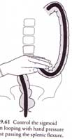
Use clockwise torque on the instrument shaft during inward push.
- remember the clockwise spiral course of the sigmoid from the pelvis
to fixation in descending colon.
- this counteracts looping but will only work if the colonoscope has
been straightened, the descending is normally fixed and any sigmoid
loop is small.
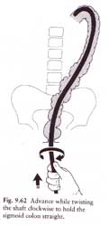
Change the patient to right lateral if life is very difficult: it is
almost immediately invariable effective if stuck at the splenic flexure.
- it makes the splenic flexure less acutely angled.
- "we change to the right lateral position in only 20-30% of pts when
'stuck' at the splenic flexure for >60s" due to the inconvenience.
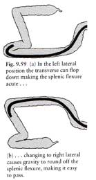
Always remember the 50-centimetre rule.
- the splenic flexure is the halt-time point.
- so when navigated, ensure the instrument is properly straightened to
50cm from the anus
- if followed "the rest of a total colonoscopy insertion should usually
be finished within a minute or two".
Transverse Colon
Usually easy if the sigmoid is not bowing up in an N-loop.
May be a sharp bend mid-point of a deep-dipping transverse colon.
- follow centre line blindly gently if necessary.
May then be difficult to climb back uphill; the secret is to pull back
repeatedly as usual.
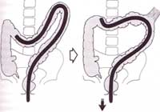
- the tip hooked around the transverse colon allows it to lift and
flatten
- often there will be paradoxical forward motion at this point.
- little in-and-out
movements like a trombone player may be needed to advance towards the
hepatic.
Sometimes a very lax phrenico-colic makes withdrawl movements
ineffective:
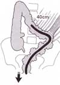
- use of force is ineffectual, but "delation, hand pressure, posturing
and gentle perserverence will eventually win".
- (hand pressure pushing up into the left upper quadrant to keep
ligament in place).
In some patients with redundant transverse, a 'gamma-loop' occurs:
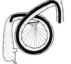
- resist this by pushing up
into the left costal margin or epigastrium (depending on results)
- can even try specific
hand pressure directly over the palpated tip for a few more centimetres
gain.
Often difficult to remove a gamma-loop and can make ileocaecal
cannulation impossible (tip less controllable).
Hepatic Flexure
A frustrating hurdle can be seeing the flexure, but not being able to
advance to it despite controlling above loops / torquing as best you
can.
Do the following:
- assess the correct angle that the tip will take on meeting the
flexure to avoid impacting in haustral folds.
- aspirate air carefully so it collapse toward but not onto your
tip.
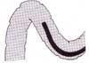
- deviate the tip in predetermined direction
- withdraw the instrument for 30-50cm, lifting the transverse and
making the scope straighter.
- once the ascending is seen, drop the colonoscope down toward caecum
by further aspiration.
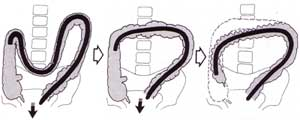
In practice these moves are done simultaneously.
When things do still not go according to plan, try:
- pushing on the left hypochondrium to lift the transverse.
- getting the pt to inspire deeply and hold their breath.
Brute force will not work as sigmoid and transverse loops can take up
your whole scope.
Ascending and Caecum
On seeing the ascending, the temptation is to push, but this often
results in loops re-forming and the tip sliding back.
The secret is to deflate.
- this collapses the capacious hepatic flexure and the ascending will
drop the tip towards the caecum.
- gives a mechanical advantage by lowering the position of the hepatic
cf the splenic flexure
- so that pushing inwards should now be effective.
Make short aspirations and push down the centre of the deflating lumen.
- if it proves difficult despite this change pt position to supine.
Once in the caecum, can reinflate for a view.
Caecum can be capacious and confusing
- identify landmarks to ensure you are really there.
- usually it is a bit dirty and hard to examine: a
'too-good-to-be-true' appearance should ring alarm bells.
Ileocaecal Valve
Pull back from the caecal pole and look for the first and most
prominant fold 5cm from the pole.
Often subtle: flattened, bulging, uncommonly protuberent lips and rare
to see the opening.
Follow this sequence to enter the valve:
- visualise, then rehearse the easiest combination of shaft twist and
up/down to point the tip towards the valve.
- pass the scope down the valve fold in the region of the bulge and
angle in.
- deflate the caecum partially to make the valve supple.
- withdraw scope until the tip catches the soft lips of the valve (get
a red-out)
- stop and insufflate air, gentle positioning into the dark lumen, then
you will pop-in.
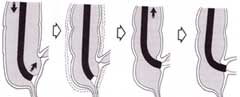
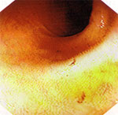
Another technique, if the view is poor, is to pass biopsy forceps into
the opening
- then use the Seldinger principle.
Another is to enter the ileum in retroflexion:
- very acutely angle the scope back to view the slit
- pull back to impact the tip in it
- insufflate to open the lips and then de-angulate / pull back to enter.
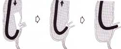
Greater distances can then be reached as for the duodenum to jejunum:
gentle steering and deflation rather than force and inflation.
- at each bend, deflate, hook, pull back then steer gently; can get up
to 30-50cm if you're a pro.
Frequently Asked Questions
What are the indications vs
Barium enema?
- double contrast Ba enema (DCBE) is safe, with 1:25,000 perforation
rate and can shows leaks & fistulae, which may be obscure to
colonoscopist.
- DCBE is adequate for pts with constipation, or minor functional
symptoms, where nothing or minor diverticular disease expected.
- colonoscopy has perf rate somewhere around 1:1700 but is more
accurate and allows biopsy and therapy; method of choice for cancer
surveillance and follow-up.
When is colonoscopy contraindicated?
- unwise three weeks post MI (risk of arrhythmia)
- unwise unless very good reason in acute severe inflammation with abdo
tenderness (higher risk of perf)
- if large deep ulcers seen, may be safest to abandon (high risk of
perf)
- in radiation colitis (one year or more, when chronic), perforation
easy without even excessive force; be careful.
- absolutely contraindicated in acute diverticulitis (threat of perf).
- and in any pt with peritonism of any cause.
- known ascites or peritoneal dialysis is a relative contraindication
(bacterial translocation under pressure)
- pts at risk (eg heart valve path) should be protected with
antibiotics.
- mycobacterial infected pts (and AIDS pts; at risk): should follow
with 60m soak of scope in gluteraldehyde.
Best bowel prep?
- take note of the pts normal bowel habits; constipated pts given
laxatives in build up and extra prep to avoid an unpleasant experience.
- stop iron tabs 3-4 days prior, stop constipating agents 1-2d prior
- no high residue food 24hrs prior; better to stay on clear fluids
only; fluid diarrhoea is demanded, with no residue.
- blood is a good purgative; usually no extra needed for acute bleeding.
What is the role of buscopan?
There is suspicion an atonic bowel is more difficult, so don't use
unless required.
Short action, best used right when needed to reduce peristalsis /
improve view.
What antibiotics are required for at-risk patients?
- amoxyl and gent at 1 and 2 hrs prior respectively is ideal.
- transient bacteriaemia is universal
- heart valve / disease pts, immunocompromised, severely ill (for eg)
should be covered.
Where does the gas go?
- CO2 insufflation is usual, it is absorbed through to the lungs and
cleared via respiration 100x faster than air
- so the colon is usually free in 15-20mins.
- any Ba enema post-colonoscopy should be delayed 20mins to allow this
to happen.
I'm getting stuck all the time in the
sigmoid.
There are two common reasons:
i) sigmoid looping and jamming; pull back to straighten.
ii) lacking conviction to do a gentle 'slide-by' a tight corner.
I'm getting suck all the time in the
proximal colon
The commonest reason is failure to observe the 50cm rule at the splenic
flexure.
The diverticular disease is real bad.
- patience is the secret; careful visualisaiton, steering and lots of
manoeuvres.
- a close-up view of a divertic warrants a 90o deflection.
- a thin paediatric colonoscopy may help.
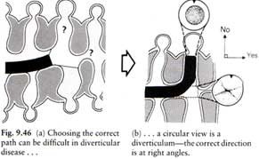
What is the effect of adhesions?
Cause angulation and difficulty but rarely becomes too difficult;
- can still straighten the instrument to shorten the bowel.
The patient is getting pain in the
sigmoid, should I really be worried?
Pain represents potential danger; is inelegant and to be avoided.
However a brief bout of pain with progress is often preferable to both
surgeon and patient than a long procedure.
Keep any pain brief, give analgesia, and pull back to reduce looping
when progress made.
What anatomical variations may I encounter?
These inevitibly will make life difficult sometimes.
1. The reversed-alpha-looping sigmoid.
- you will unexpectedly find that anticlockwise rotation is helpful in
straightening a sigmoid loop
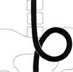
2. The instrument may run centrally and pass into a 'reversed splenic
flexure'
- this occurs in as much as 1:20 people
- probably most common reason for an unexpectedly difficult colonoscopy
for even the expert.
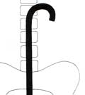
- having passed the flexure, the advancing instrument then forces the
transverse deep into a loop.
- this makes the hepatic flexure difficult and the ileocaecal valve
impossible.
- try to reverse it by twisting the shaft strongly counter-clockwise; it
reverses the hockey-stick at the sigmoid.
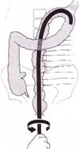
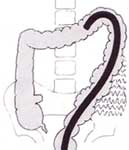
3. Mobility of colon area such as caecum
- there is great variability in the mobility of various viscera
- this can result in endoscopic confusion, eg finding the caecum at the
right hypochondrium
- a mobile colon easy at operation is difficult at endoscopy.
What other hazards are there?
- hypotensive episodes or respiratory arrests from sedation
- vasovagals
- inexperience and force explain most perforations.
- small tears in the ante-messenteric or serosal aspects of colon /
haematomas in mesentery occur more commonly than suspected and go
unnoticed.
- the spleen has been avulsed in case reports by over-enthusiasm at the
splenic flexure.
- blow-out insufflation injury to divertics has been reported: take
great care if you are in a tic.
- gram-negative septicaemia has resulted from instrumentation.
- not being aware of pain in the over-sedated can be concerning.
- take your time and it is safe.